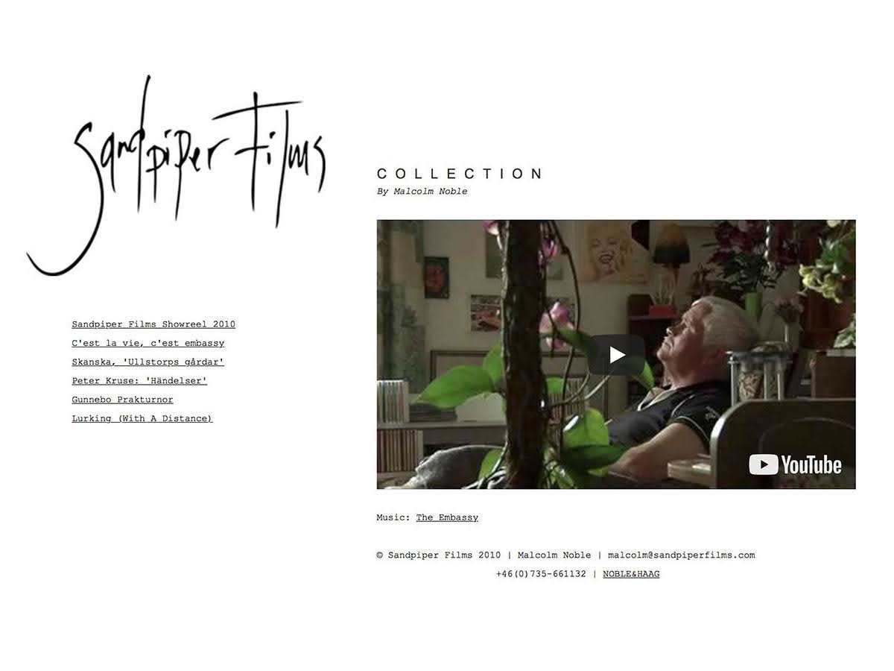

-
TORBJÖRN HÅKANSSON
- Tel: 0761675653
Mail: torbhkan@gmail.com
-
Om mig
- Sedan tidigt 2000-tal har jag jobbat som musikproducent, programmerare och formgivare. Jag gör webbsidor och andra tekniska lösningar på frilansbasis genom egen firma, samt driver skivetiketten INTERNATIONAL där jag producerar och skriver musik, främst åt det egna bandet THE EMBASSY. År 2002–03 var jag anställd som Java-programmerare på Ericsson Mobile i Göteborg.
- För närvarande skriver jag på en master i datavetenskap vid Stockholms universitet om rekommendationssystem i digitala media. Jag är alltid intresserad av att lära mig nya saker, är anpassningsbar, driven och initiativrik. Jag tycker om att sitta i timmar ensam och koda, samtidigt är jag genom musikproduktionen van vid olika typer av samarbeten, gärna gränsöverskridande, gärna med tekniskt inriktade konstnärer. Motionerar regelbundet genom löpning, styrketräning och boxning.
-
Tekniska kunskaper
-
Programmeringsspråk
Mycket goda: HTML, CSS, Javascript
Goda: Java, Ruby, OpenGL, Python, Perl, PHP, SQL, OpenGL
Är väl bevandrad i olika framework som Bootstrap och jQuery för att snabbt designa funktionella webbsidor. -
Plattformar
Bekväm att arbeta med GitHub, kodeditorer som Atom och Brackets och även IDE:er som Android Studio, Xcode och Eclipse. -
Operativsystem
Använder macOS till vardags, men jobbar lika bra i Windows eller Linux-miljö. -
Musik & design
Mycket goda: Ableton Live, Cubase
Goda: Adobe Photoshop, Adobe Illustrator, Final Cut Pro, Microsoft Office
-
Utbildning & arbete
-
2002– Musiker, programmerare och formgivare på frilansbasis
2015– Masterprogram datavetenskap vid Stockholms universitet
2010– Workshoplärare i musikproduktion på Kulturhuset/Lava i Stockholm
2005–06 Masterprogram Art & Technology vid Chalmers tekniska högskola
2002–03 Java-programmerare på Ericsson Mobile i Göteborg
1998–02 Magister i systemvetenskap vid Göteborgs universitet
1995–98 Etnologi, litteraturvetenskap, statsvetenskap vid Göteborgs universitet
- Kurser i urval: Programkonstruktion, Mjukvarukonstruktion, Objektorienterad systemutveckling, Testdriven utveckling, Beslutstödssystem, Informationssystemmiljöer, Databaser och systemutveckling, Komplexa IT-baserade system, Interactivity and narrativity, Mathematics and computer science for artists, Open and Big Data Management, Data mining in Computer and System Sciences, Data warehousing, Cyber Forensics, Digital Forensics, Network Security, Information System Security, Software Security...
-
Arbetsprover
- The Embassy
- Marcus Söderlund
- Viktoria Jäderling



- Torbjörn Håkansson
Dellensvägen 29, 12058 Årsta
Tel: 0761675653
Mail: torbhkan@gmail.com